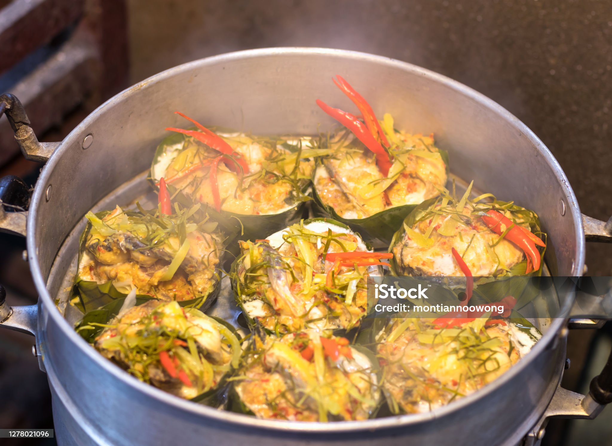
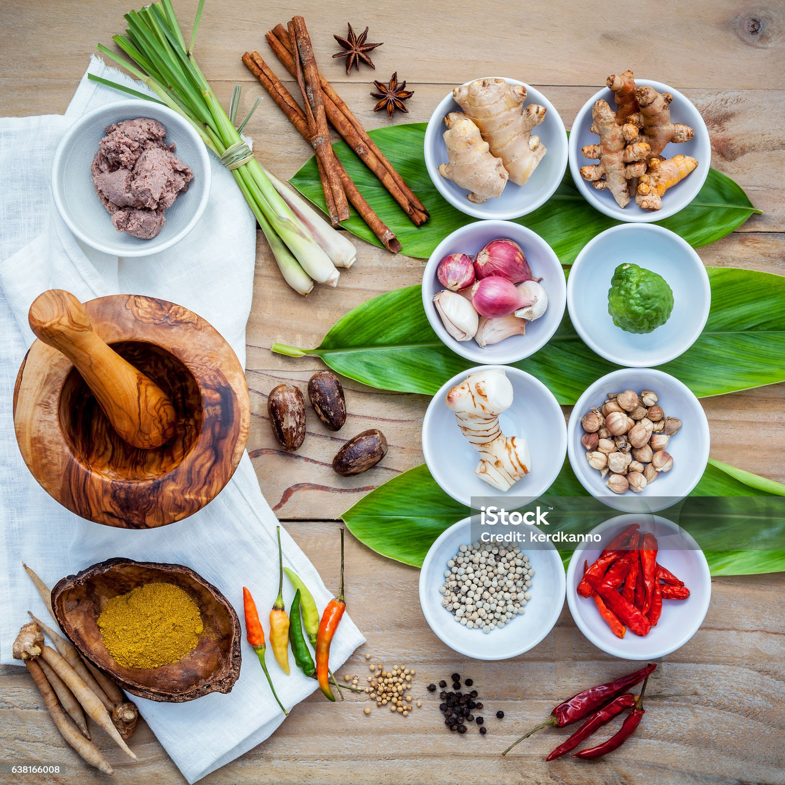

What is Amok?
Amok is one of Cambodia’s most beloved delicacies. It is a mild, curried dish typically made from fish, coconut milk, and a blend of local spices. Amok is cherished by locals and visitors alike.
Cooking Style
Amok is unique because it is traditionally steamed in banana leaves. The fish and curry mixture are placed inside the leaves and steamed until thick and creamy, infusing the dish with a wonderful aroma.
Taste of Amok
The distinctive flavor comes from kroeung, a local herb paste made with lemongrass, garlic, turmeric, and other herbs. Coconut milk adds a smooth, rich texture, while eggs bind the ingredients together.
Other Ingredients
While fish is the most common protein, some variations use chicken, tofu, or seafood. Amok is always served with white rice, making it a complete meal.
Cultural Aspect
Amok is more than just a dish; it is a cherished part of Cambodian life. It is often prepared for special occasions, family gatherings, or to honor guests. Many families have their own recipes passed down through generations.
Popularity
Today, Amok can be found throughout Cambodia, from markets and street food stalls to fine dining restaurants. The dish is a symbol of Cambodia’s warm and rich culture.
Ingredients
- 250g fish fillet
- 2 sheets banana leaves
- 100g galangal
- 100g turmeric
- 1 red onion
- 2 kaffir lime leaves
- 3 garlic cloves
- 2 eggs
- 100g peanuts
- 250ml coconut cream
- 3 star anise
- 1 teaspoon salt
- 3 sticks lemongrass
Directions
- Make a banana leaf basket.
- Chop lemongrass, turmeric, and galangal.
- Add chopped red chili, red onion, garlic, and kaffir lime leaves.
- Add peanuts and coconut cream.
- Blend until very smooth.
- Chop noni leaf and fish.
- Heat pan, add oil and then kroeung paste.
- Add star anise to pan.
- Season with salt and add a spoonful of coconut milk.
- Add the fish.
- Stir and let simmer.
- Beat eggs and add to pan.
- Add noni leaf.
- Add mixture to banana leaf bowl.
- Cover with more beaten egg.
- Steam for around 10 minutes.